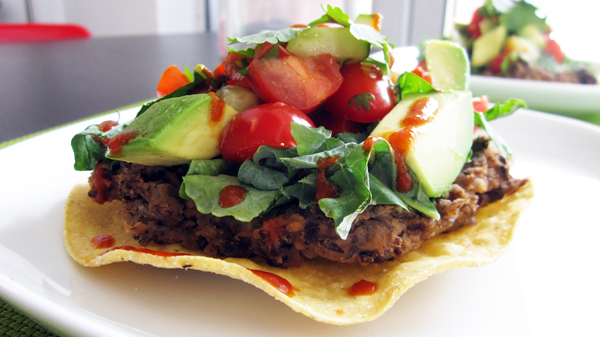

Ingredients:
2 tbsp olive oil
1/2 large onion, diced
1 clove garlic, minced
1/2 tsp chili powder
1/2 tsp cumin powder
1 can black beans, drained
1/4 cup water
Tostadas
4 Tostadas
1 tbsp olive oil
Topping Options
Shredded lettuce greens
Salsa
Vegan sour cream
Vegan shredded cheese
Diced avocado
Diced cucumber
Cilantro
Pepitas
Hot sauce
Directions:
Refried Black Beans
- Heat oil in large frying pan over medium-high heat. Add onions and garlic, and saute until translucent, about 3 minutes.
- Stir in chili powder and cumin powder, and cook for 1 minute.
- Add the black beans and water, and cook until beans are tender, about 4 minutes. Use a large fork or potato masher to roughly mash the
beans. Cook for another minute.
Tostadas
- Preheat oven to 400F.
- Brush the tostadas lightly with the oil and place on a cookie sheet.
- Bake for 5 minutes, then turn tostadas, and bake
for 3-6 minutes longer until the tostadas are crisp and light brown.
- Divide and spread the refried bean mixture onto the 4 tostadas, add toppings, and serve with hot sauce.